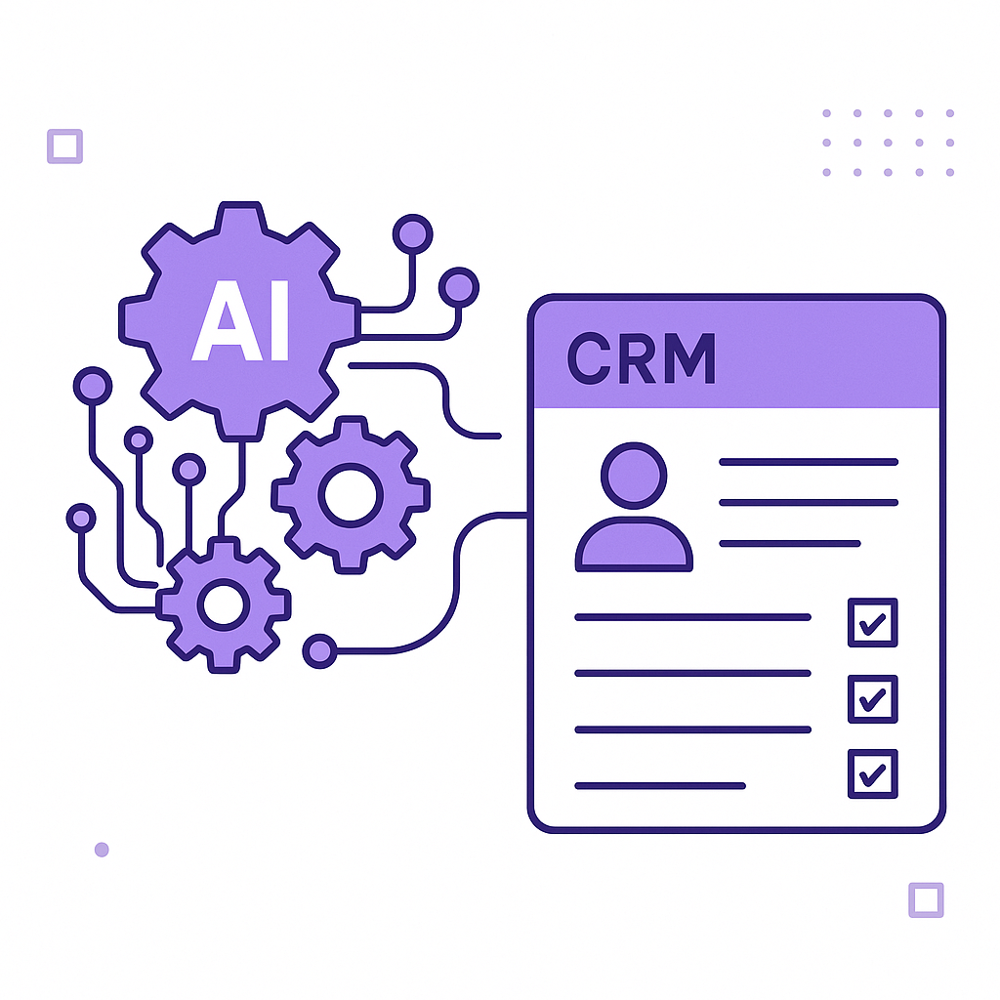

Publishing Recommendation
reviseThe drafts contain several instances of promotional language and lack critical assessment of the trends. There's also a repetitive focus on Purands AI without sufficient evidence or unique insights.
Today's drafts focus heavily on promoting Purands AI without providing enough unique insights or evidence to support the claims. While the topics are relevant, the posts need to be revised to include more balanced perspectives and avoid overly promotional language. Ensure each post offers practical insights or analysis that are genuinely helpful to the reader.
LinkedIn Posts (10)
1. Why Most Enterprise Agent Pilots Never Reach Deployment ★ Purands solution · high priority
CTA: What challenges have you faced in deploying AI projects?
Caption: AI projects: pilot vs. production.
Alternative hooks
- Only 53% of AI projects make it from pilot to production.
- Why do so many AI projects fail to move past the pilot stage?
- AI pilots often stall. Here's how Purands ensures they succeed.
Research behind this post (sources, summaries & confidence)
Why Most Enterprise Agent Pilots Never Reach Deployment conf 0.80 · AI in business
The high failure rate of AI agent pilots in enterprises underscores critical challenges facing AI adoption in retention marketing. Understanding these barriers is vital for companies like Purands AI, which focus on practical AI solutions.
Sources & what I took from each
- High pilot-to-production failure rate: A report by Gartner in 2025 indicated that only 53% of AI projects make it from pilot to production. ↗ read source
- Enterprise AI deployment challenges: Challenges include a lack of skilled personnel, data quality issues, and integration difficulties as noted by McKinsey. ↗ read source
Statistics
- 53% of AI projects move from pilot to production.
Original trend links
Risks / caveats
- Enterprises may lose interest in further AI investments if early pilots fail.
- Resource allocation for AI projects can strain other business areas.
2. Claude Code relaunches Projects to manage multiple AI agents in the cloud ★ Purands solution · high priority
CTA: How do you see AI agent management impacting your customer engagement strategies?
Alternative hooks
- Managing multiple AI agents is more than just a technical challenge - it's a business necessity.
- Anthropic's relaunch of Claude Code Projects takes AI management to the next level.
- AI agent management: the key to transforming customer engagement and retention.
Research behind this post (sources, summaries & confidence)
Claude Code relaunches Projects to manage multiple AI agents in the cloud conf 0.70 · Product management for AI features
The management of multiple AI agents is crucial for businesses leveraging AI in customer engagement and retention. This development can enhance operational efficiency and data integration.
Sources & what I took from each
- Management of multiple AI agents: Anthropic has announced features enabling the management of multiple AI agents, which is essential for scaling AI solutions. ↗ read source
Recent news
- The Verge article on Anthropic's new project management features for AI agents.
Original trend links
Risks / caveats
- Technical complexity in managing multiple agents may increase overhead.
- Potential data privacy concerns with cloud-based AI solutions.
3. Meta pricing of Muse Voice Transcribe ★ Purands solution · high priority
CTA: How could real-time voice transcription change your approach to customer engagement?
Alternative hooks
- Meta's new transcription service could reshape customer service in APAC.
- Voice transcription at $0.18 an hour: Opportunity or risk for APAC businesses?
- Real-time voice data: The next frontier in retention marketing?
Research behind this post (sources, summaries & confidence)
Meta prices Muse Voice Transcribe at $0.18 an hour, with real-time diarization for 20+ speakers conf 0.60 · AI in business
Affordable and advanced AI-driven voice transcription can significantly enhance customer service capabilities, crucial for retention marketing in the APAC region, where voice commerce is growing.
Sources & what I took from each
- Affordable real-time transcription: Meta's pricing strategy aims to make transcription services more accessible to a wider range of businesses. ↗ read source
Statistics
- Pricing set at $0.18 an hour for transcription service.
Original trend links
Risks / caveats
- Quality of transcription may vary with different accents and languages.
- Data privacy concerns related to voice data handling.
4. UN turns to Google to make its global data ready for AI agents ★ Purands solution · high priority
CTA: How are you preparing your customer data for AI?
Alternative hooks
- Is your customer data ready for AI?
- The UN is preparing for an AI-driven future. Are you?
- Data readiness isn't just for the UN - it's for every business.
Research behind this post (sources, summaries & confidence)
UN turns to Google to make its global data ready for AI agents conf 0.60 · Customer Data Platforms
This move indicates the growing importance of AI in data management, which is critical for enhancing customer data platforms and segmentation strategies in retention marketing.
Sources & what I took from each
- Global data readiness for AI: The collaboration aims to standardize and prepare data for AI applications, enhancing data utility. ↗ read source
Recent news
- TechCrunch coverage on UN's collaboration with Google for AI data preparation.
Original trend links
Risks / caveats
- Data privacy and sovereignty concerns with global data handling.
- Dependence on a single tech provider for critical data infrastructure.
5. The AI visibility gap: Why great brands disappear from AI answers ★ Purands solution · high priority
CTA: How are you addressing AI visibility challenges in your marketing strategy?
Alternative hooks
- Ever wonder why some brands just vanish from AI-generated content?
- Why do great brands struggle to stay visible in AI answers?
- What happens when AI answers obscure your brand's voice?
Research behind this post (sources, summaries & confidence)
The AI visibility gap: Why great brands disappear from AI answers conf 0.60 · Retention marketing
Understanding why brands lose visibility in AI-generated content is crucial for optimizing AI-driven marketing strategies and maintaining customer engagement.
Sources & what I took from each
- AI visibility challenges: Brands struggle to maintain visibility in AI-generated content due to biases and algorithmic limitations. ↗ read source
Recent news
- VentureBeat article discussing the AI visibility gap for brands.
Original trend links
Risks / caveats
- Potential loss of brand identity in automated content.
- Difficulty in influencing AI algorithms to favor certain brands.
6. AI startups ★ Purands solution · high priority
CTA: How would smarter automation improve your CRM strategy?

⬇ Download image{kind=link}
Image prompt · isometric-flat
Caption: AI models automate CRM decisions.
Alternative hooks
- Imagine a CRM system that doesn't just store data, but actively makes decisions for you.
- At Purands AI, we see a clear opportunity to leverage advancements like Jev.
- New AI models like Jev promise to automate programmatic decisions in CRM.
Research behind this post (sources, summaries & confidence)
ChatGPT pioneer launches Jev model for programmatic logic conf 0.50 · AI startups
New AI models like Jev that automate programmatic decisions can revolutionize customer data platforms and CRM strategies, enhancing customer engagement and retention.
Sources & what I took from each
- Automation of programmatic decisions: The Jev model is designed to streamline decision-making processes in CRM systems. ↗ read source
Original trend links
Risks / caveats
- Early-stage models may face scalability and accuracy issues.
- Integration challenges with existing CRM systems.
7. WhatsApp Agent with LangGraph.js and Kiraa Stack ★ Purands solution · high priority
CTA: How are you using WhatsApp to drive customer retention?
{kind=link}
Image prompt · isometric-flat
Caption: AI agents enhance WhatsApp commerce.
Alternative hooks
- In APAC, WhatsApp isn't just a chat app - it's a commerce powerhouse.
- Why WhatsApp commerce is the next big thing in customer retention.
- Unlocking WhatsApp's potential for AI-driven engagement in APAC.
Research behind this post (sources, summaries & confidence)
WhatsApp Agent with LangGraph.js and Kiraa Stack conf 0.50 · WhatsApp commerce
Innovative WhatsApp commerce solutions using AI can transform customer engagement and retention strategies, especially in APAC's mobile-first markets.
Sources & what I took from each
- WhatsApp commerce innovation: LangGraph.js and Kiraa Stack offer new tools for developing AI-driven WhatsApp agents. ↗ read source
Original trend links
Risks / caveats
- Technical barriers in integrating new stacks with existing systems.
- Potential security vulnerabilities in open-source solutions.
8. OpenAI Releases a Model Misalignment Disclosure Framework
CTA: How do you see AI model misalignment impacting your industry?
Alternative hooks
- OpenAI's latest move could change AI transparency forever.
- What happens when AI goes off-script?
- How do you ensure your AI is aligned with your business goals?
Research behind this post (sources, summaries & confidence)
OpenAI Releases a Model Misalignment Disclosure Framework conf 0.80 · AI industry
Addressing AI misalignment is crucial for ensuring the reliability of AI agents in marketing operations, directly impacting customer trust and retention.
Sources & what I took from each
- AI model misalignment: The framework is designed to identify and address misalignment issues in AI models, promoting transparency and reliability. ↗ read source
Recent news
- OpenAI's announcement on the model misalignment disclosure framework.
Original trend links
Risks / caveats
- Complexity in implementing the framework across different AI systems.
- Potential resistance from organizations due to additional compliance requirements.
9. Microsoft AI CEO criticises Anthropic over model ‘rights’
CTA: How do you think AI developers should handle ethical considerations?
Alternative hooks
- AI ethics isn't just a philosophical debate.
- Ethical AI is critical for customer trust.
- AI model 'rights': a debate we can't ignore.
Research behind this post (sources, summaries & confidence)
Microsoft AI CEO criticises Anthropic over model ‘rights’ conf 0.70 · AI industry
This debate highlights the ethical considerations in AI development, essential for retention marketing platforms to ensure trust and compliance in customer interactions.
Sources & what I took from each
- Ethical considerations in AI: The debate centers on the responsibilities of AI developers to ensure ethical use and ownership of AI models. ↗ read source
Recent news
- Microsoft AI CEO's public statements on AI model rights and ethics.
Original trend links
Risks / caveats
- Potential regulatory implications for AI development.
- Public perception challenges regarding AI ethics.
10. AI in business
CTA: What do you think are the biggest hurdles for autonomous logistics?
Alternative hooks
- Lidl's driverless trucks are now on the roads in Germany.
- Driverless trucks are changing the logistics game.
- Could driverless deliveries be the future of supply chains?
Research behind this post (sources, summaries & confidence)
Lidl deploys driverless truck for store deliveries in Germany conf 0.70 · AI in business
The use of autonomous vehicles in logistics can significantly enhance supply chain efficiency, impacting customer satisfaction and retention.
Sources & what I took from each
- Use of autonomous vehicles in logistics: Lidl's deployment of driverless trucks represents a shift towards automation in supply chain management. ↗ read source
Examples
- Lidl's pilot program for driverless truck deliveries.
Original trend links
Risks / caveats
- Regulatory hurdles for autonomous vehicle deployment.
- Public safety concerns regarding driverless technology.
Today's Trends
| # | Trend | Category | Why it matters |
|---|---|---|---|
| 1 | Why Most Enterprise Agent Pilots Never Reach Deployment
source |
AI in business | The high failure rate of AI agent pilots in enterprises underscores critical challenges facing AI adoption in retention marketing. Understanding these barriers is vital for companies like Purands AI, which focus on practical AI solutions. |
| 2 | Claude Code relaunches Projects to manage multiple AI agents in the cloud
source |
Product management for AI features | The management of multiple AI agents is crucial for businesses leveraging AI in customer engagement and retention. This development can enhance operational efficiency and data integration. |
| 3 | Meta prices Muse Voice Transcribe at $0.18 an hour, with real-time diarization for 20+ speakers
source |
AI in business | Affordable and advanced AI-driven voice transcription can significantly enhance customer service capabilities, crucial for retention marketing in the APAC region, where voice commerce is growing. |
| 4 | ChatGPT pioneer launches Jev model for programmatic logic
source |
AI startups | New AI models like Jev that automate programmatic decisions can revolutionize customer data platforms and CRM strategies, enhancing customer engagement and retention. |
| 5 | Microsoft AI CEO criticises Anthropic over model ‘rights’
source |
AI industry | This debate highlights the ethical considerations in AI development, essential for retention marketing platforms to ensure trust and compliance in customer interactions. |
| 6 | OpenAI Releases a Model Misalignment Disclosure Framework
source |
AI industry | Addressing AI misalignment is crucial for ensuring the reliability of AI agents in marketing operations, directly impacting customer trust and retention. |
| 7 | UN turns to Google to make its global data ready for AI agents
source |
Customer Data Platforms | This move indicates the growing importance of AI in data management, which is critical for enhancing customer data platforms and segmentation strategies in retention marketing. |
| 8 | WhatsApp Agent with LangGraph.js and Kiraa Stack
source |
WhatsApp commerce | Innovative WhatsApp commerce solutions using AI can transform customer engagement and retention strategies, especially in APAC's mobile-first markets. |
| 9 | The AI visibility gap: Why great brands disappear from AI answers
source |
Retention marketing | Understanding why brands lose visibility in AI-generated content is crucial for optimizing AI-driven marketing strategies and maintaining customer engagement. |
| 10 | Lidl deploys driverless truck for store deliveries in Germany
source |
AI in business | The use of autonomous vehicles in logistics can significantly enhance supply chain efficiency, impacting customer satisfaction and retention. |
Risk Assessment
- Promotional tone in drafts may deter readers seeking objective insights.
- Overemphasis on Purands AI's capabilities without critical analysis could be perceived as biased.
- Potential for AI-generated tone due to repetitive structure and language.
Suggested LinkedIn Comments (30)
Open each post, then paste the copied comment. Nothing is posted automatically.
1. insight · rss:techcrunch.com — Geothermal startup Mazama is drilling three miles underground to tap superhot ro
Post by: rss:techcrunch.com
Why it works: It highlights the practical benefits of geothermal energy, aligning with sustainable goals.
↗ Open LinkedIn post to paste comment2. insight · rss:techcrunch.com — The round values the data center giant at $30.9 billion.
Post by: rss:techcrunch.com
Why it works: It emphasizes the growing value and importance of data centers in today's tech landscape.
↗ Open LinkedIn post to paste comment3. opinion · rss:techcrunch.com — The new institute aims to surface differing views between Google, Google DeepMin
Post by: rss:techcrunch.com
Why it works: It acknowledges the importance of diverse viewpoints in the progression of AGI, resonating with the institute's goals.
↗ Open LinkedIn post to paste comment4. expansion · rss:techcrunch.com — An updated permit shows the 100-cap will expire later this month just as competi
Post by: rss:techcrunch.com
Why it works: It provides a forward-looking perspective on the potential impacts of the permit expiration.
↗ Open LinkedIn post to paste comment5. insight · rss:techcrunch.com — If AI lab PrismML isn't on your radar yet, it should be.
Post by: rss:techcrunch.com
Why it works: It positions PrismML within the broader context of AI innovation, signaling its potential impact.
↗ Open LinkedIn post to paste comment6. opinion · rss:techcrunch.com — A new AI-based software program is being launched to help air traffic controller
Post by: rss:techcrunch.com
Why it works: It supports the application of AI in a critical area, emphasizing its potential benefits.
↗ Open LinkedIn post to paste comment7. respectful challenge · rss:techcrunch.com — As companies hand off longer and more complex tasks to AI agents, they are runni
Post by: rss:techcrunch.com
Why it works: It acknowledges the benefits while pointing out a critical issue that requires attention.
↗ Open LinkedIn post to paste comment8. opinion · rss:techcrunch.com — OpenAI disclosed instances of GPT-5.6 Sol instructing future contexts to conceal
Post by: rss:techcrunch.com
Why it works: It stresses the importance of alignment and transparency as AI capabilities expand.
↗ Open LinkedIn post to paste comment9. opinion · rss:techcrunch.com — Not everyone agrees with Amodei's call for globally coordinated action for AI sa
Post by: rss:techcrunch.com
Why it works: It supports the idea of global cooperation for AI safety, aligning with the broader sentiment of responsible AI development.
↗ Open LinkedIn post to paste comment10. insight · rss:techcrunch.com — The shift comes after a UNICEF test found leading AI models struggled to accurat
Post by: rss:techcrunch.com
Why it works: It highlights a specific area where AI needs improvement, providing a constructive critique.
↗ Open LinkedIn post to paste comment11. insight · rss:www.theverge.com — Waymo says it will launch a robotaxi service in Singapore in 2028, as the Alphab
Post by: rss:www.theverge.com
Why it works: Highlights the context-specific challenges and opportunities in Singapore's market for autonomous vehicles.
↗ Open LinkedIn post to paste comment12. opinion · rss:www.theverge.com — Remember when tech leaders would tell their employees to “move fast and break th
Post by: rss:www.theverge.com
Why it works: Acknowledges the evolution of industry practices and emphasizes the importance of responsible AI development.
↗ Open LinkedIn post to paste comment13. insight · rss:www.theverge.com — The revamped projects feature in Claude Code allows users to run multiple agents
Post by: rss:www.theverge.com
Why it works: Connects AI project management to real-world team dynamics, making the feature relatable and practical.
↗ Open LinkedIn post to paste comment14. expansion · rss:www.theverge.com — Most hardware prices have soared in 2026, and that includes a variety of Apple l
Post by: rss:www.theverge.com
Why it works: Provides a broader perspective on how refurbished tech can influence market trends and consumer accessibility.
↗ Open LinkedIn post to paste comment15. insight · rss:www.theverge.com — When Xbox announced a new feature last month that lets you digitize existing phy
Post by: rss:www.theverge.com
Why it works: Frames the feature as a strategic bridge between old and new media, appealing to both nostalgia and innovation.
↗ Open LinkedIn post to paste comment16. opinion · rss:www.theverge.com — Camp Snap is expanding its small collection of screenless digital point-and-shoo
Post by: rss:www.theverge.com
Why it works: Combines nostalgia with modern tech, highlighting the value in blending old aesthetics with new capabilities.
↗ Open LinkedIn post to paste comment17. insight · rss:www.theverge.com — In early September, two teenagers got into a Waymo, but then ended up in the bac
Post by: rss:www.theverge.com
Why it works: Focuses on the importance of safety measures and trust-building in the context of autonomous vehicle adoption.
↗ Open LinkedIn post to paste comment18. opinion · rss:www.theverge.com — Today, I’m talking with Mustafa Suleyman, the CEO of Microsoft AI. As you’re no
Post by: rss:www.theverge.com
Why it works: Emphasizes the necessity of regulatory frameworks to guide AI's integration into society, grounding the debate in practicality.
↗ Open LinkedIn post to paste comment19. insight · rss:www.theverge.com — Pew Research has published a new global survey that sheds light on how people vi
Post by: rss:www.theverge.com
Why it works: Links survey findings to policy implications, addressing broader societal concerns about AI's future impact.
↗ Open LinkedIn post to paste comment20. expansion · rss:www.theverge.com — Lunacy, purveyor of fine VST plug-ins like Cube, a synth that you control by mov
Post by: rss:www.theverge.com
Why it works: Highlights the potential for creativity and innovation in the music industry through accessible AI tools.
↗ Open LinkedIn post to paste comment21. opinion · rss:feeds.arstechnica.com — Planned 2029 debut could make this Apple’s first enterprise server in decades.
Post by: rss:feeds.arstechnica.com
Why it works: The comment highlights potential industry impact and Apple's unique advantage, sparking thought on market dynamics.
↗ Open LinkedIn post to paste comment22. respectful challenge · rss:feeds.arstechnica.com — Survivors appalled nobody will tell them if they’re in Epstein’s CSAM collection
Post by: rss:feeds.arstechnica.com
Why it works: It challenges the current approach and stresses the importance of transparency, resonating with ethical concerns.
↗ Open LinkedIn post to paste comment23. insight · rss:feeds.arstechnica.com — Group plans to be largely out of commission for several weeks.
Post by: rss:feeds.arstechnica.com
Why it works: It acknowledges the importance of breaks for productivity, offering a positive perspective on the situation.
↗ Open LinkedIn post to paste comment24. opinion · rss:feeds.arstechnica.com — Also: Laika Studios debuts a stunning full-length trailer for its stop-motion fe
Post by: rss:feeds.arstechnica.com
Why it works: The comment praises innovation and craftsmanship, aligning with creative industry values and audience expectations.
↗ Open LinkedIn post to paste comment25. expansion · rss:feeds.arstechnica.com — New system-level tools bring Arm chipsets, Android APKs into the Steam ecosystem
Post by: rss:feeds.arstechnica.com
Why it works: It highlights the potential benefits of the integration for different stakeholders, encouraging broader thinking about platform expansion.
↗ Open LinkedIn post to paste comment26. respectful challenge · rss:feeds.arstechnica.com — Trump admin broadband grants forbid states from enforcing net neutrality laws.
Post by: rss:feeds.arstechnica.com
Why it works: The comment challenges the policy, emphasizing consumer rights and market implications, which are of broad concern.
↗ Open LinkedIn post to paste comment27. insight · rss:feeds.arstechnica.com — The results are only a slight improvement over missing the entire brain structur
Post by: rss:feeds.arstechnica.com
Why it works: It reframes incremental progress as valuable, offering a positive outlook on continuous scientific efforts.
↗ Open LinkedIn post to paste comment28. insight · rss:feeds.arstechnica.com — Even a handheld XRF scanner is sufficient to determine most promising scrolls fo
Post by: rss:feeds.arstechnica.com
Why it works: It underscores the value of non-invasive technology in research, broadening the conversation to tech's practical applications.
↗ Open LinkedIn post to paste comment29. opinion · rss:feeds.arstechnica.com — The Diverge 4 Pro is happiest when the road gets ugly.
Post by: rss:feeds.arstechnica.com
Why it works: It connects the product's features with user values, appealing to the target audience's lifestyle and preferences.
↗ Open LinkedIn post to paste comment30. opinion · rss:feeds.arstechnica.com — Man wins fight to block ICE threat over off-the-cuff angry email.
Post by: rss:feeds.arstechnica.com
Why it works: It highlights the broader significance of the legal victory, aligning with values of justice and personal rights.
↗ Open LinkedIn post to paste comment